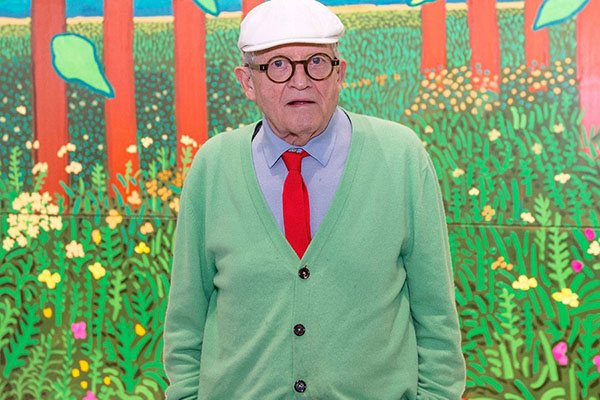

Biography
 David Hockney, OM, CH, RA (born 9 July 1937) is a British painter, draftsman, printmaker, stage designer, and photographer. As an important contributor to the pop art movement of the 1960s, he is considered one of the most influential British artists of the 20th century.
Hockney has owned a home and studio in Bridlington and London, and two residences in California, where he has lived on and off since 1964: one in the Hollywood Hills, one in Malibu, and an office and archives on Santa Monica Boulevard in West Hollywood, California.
On 15 November 2018, Hockney's 1972 work Portrait of an Artist (Pool with Two Figures) sold at Christie's auction house in New York City for $90 million (£70 million), becoming the most expensive painting by a living artist sold at auction. This broke the previous record, set by the 2013 sale of Jeff Koons' Balloon Dog (Orange) for $58.4 million. Hockney held this record until 15 May 2019, Jeff Koons reclaimed the honour when his Rabbit sold for more than $91 million at Christie's in New York.
Exhibition
David Hockney has been featured in over 400 solo exhibitions and over 500 group exhibitions. He had his first one-man show at Kasmin Limited when he was 26 in 1963, and by 1970 the Whitechapel Gallery in London had organised the first of several major retrospectives, which subsequently travelled to three European institutions.LACMA also hosted a retrospective exhibition in 1988 which travelled to The Met, New York, and Tate, London. In 2004, he was included in the cross-generational Whitney Biennial, where his portraits appeared in a gallery with those of a younger artist he had inspired, Elizabeth Peyton.
In October 2006, the National Portrait Gallery in London organised one of the largest ever displays of Hockney's portraiture work, including 150 paintings, drawings, prints, sketchbooks, and photocollages from over five decades. The collection ranged from his earliest self-portraits to work he completed in 2005. Hockney assisted in displaying the works and the exhibition, which ran until January 2007, was one of the gallery's most successful. In 2009, "David Hockney: Just Nature" attracted some 100,000 visitors at the Kunsthalle Würth in Schwäbisch Hall, Germany.
From 21 January 2012 to 9 April 2012, the Royal Academy presented A Bigger Picture, which included more than 150 works, many of which take entire walls in the gallery's brightly lit rooms. The exhibition is dedicated to landscapes, especially trees and tree tunnels of his native Yorkshire. Works included oil paintings, watercolours, and drawings created on an iPad and printed on paper. Hockney said, in a 2012 interview, "It's about big things. You can make paintings bigger. We're also making photographs bigger, videos bigger, all to do with drawing." The exhibition drew more than 600,000 visitors in under 3 months. The exhibition moved to the Guggenheim Museum in Bilbao, Spain from 15 May to 30 September, and from there to the Ludwig Museum in Cologne, Germany, between 27 October 2012 and 3 February 2013.
From 26 October 2013 to 30 January 2014 David Hockney: A Bigger Exhibition was presented at the de Young Museum, one of the Fine Arts Museums of San Francisco. The largest solo exhibition Hockney has had, with 397 works of art in more than 18,000 square feet, was curated by Gregory Evans and included the only public showing of The Great Wall, developed during research for Secret Knowledge, and works from 1999 to 2013 in a variety of media from camera lucida drawings to watercolors, oil paintings, and digital works.
From 9 February to 29 May 2017 David Hockney was presented at the Tate Britain, becoming the gallery's most visited exhibition ever. The exhibition marked Hockney's 80th year and gathered together "an extensive selection of David Hockney’s most famous works celebrating his achievements in painting, drawing, print, photography and video across six decades". The show then traveled to Centre Georges Pompidou in Paris and The Metropolitan Museum of Art. The wildly popular retrospective landed among the top ten ticketed exhibitions in London and Paris for 2017 with over 4,000 visitors per day at the Tate and over 5,000 visitors per day in Paris.
After the blockbuster exhibitions in 2017 of the works of decades past, Hockney moved right along to show his newest paintings on hexagonal canvases and mural-size 3D photographic drawings at Pace Gallery in 2018. He revisited paintings of Garrowby Hill, the Grand Canyon, and Nichols Canyon Road, this time painting them on hexagonal canvases to enhance aspects of reverse perspective. In 2019, his early work featured in his native Yorkshire at The Hepworth Wakefield.